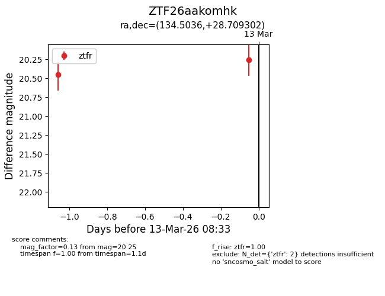
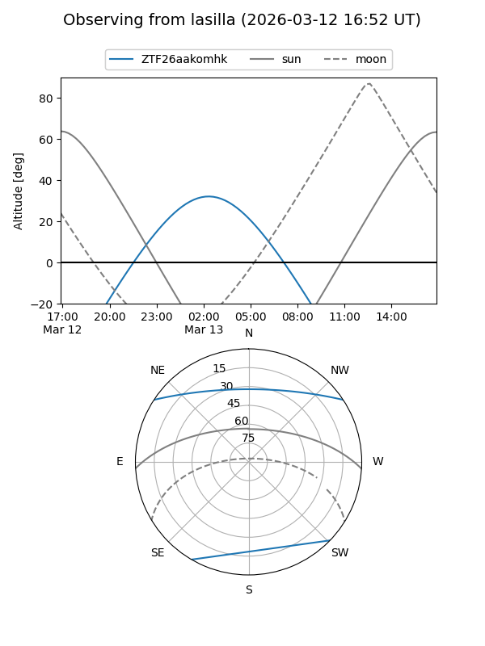
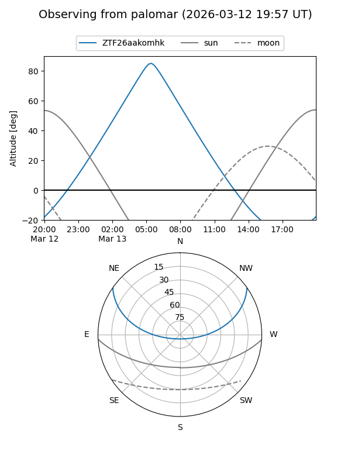

ZTF26aakomhk
Target ZTF26aakomhk at 2026-03-13 08:35
Aliases and brokers:
FINK: link
Lasair: link
ALeRCE: link
alt names
ZTF26aakomhk (ztf,fink_ztf)
Coordinates:
equatorial (ra, dec) = 134.5036,+28.70930
equatorial (HMS+DMS) = 08:58:00.87,+28:42:33.49
galactic (l, b) = (196.6772,+38.94428)
Flags:
Photometry:
last ztfr=20.25
2 ztfr detections
Lightcurve

Visibility


Additional plots